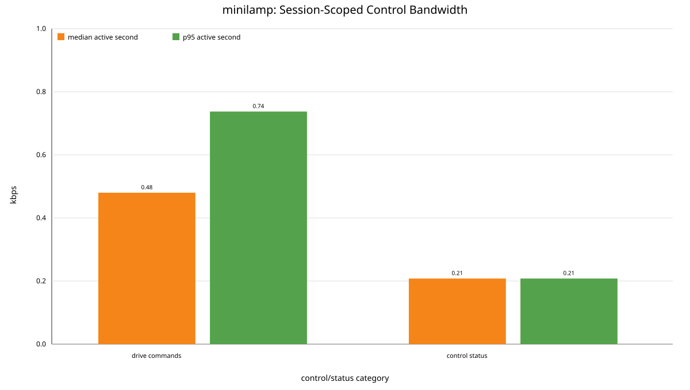
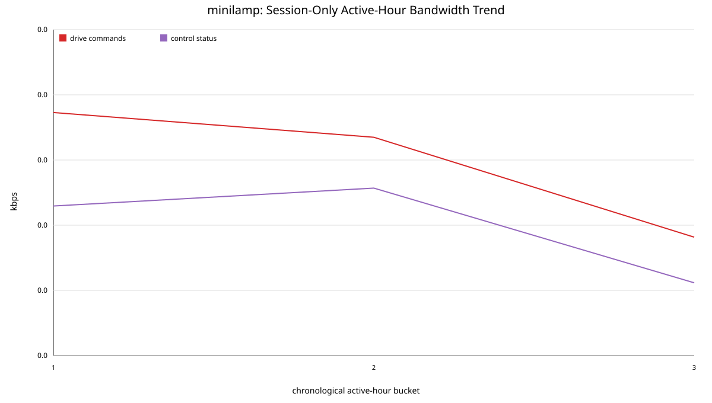
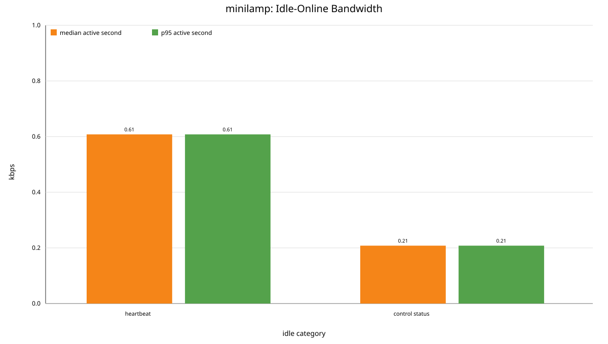
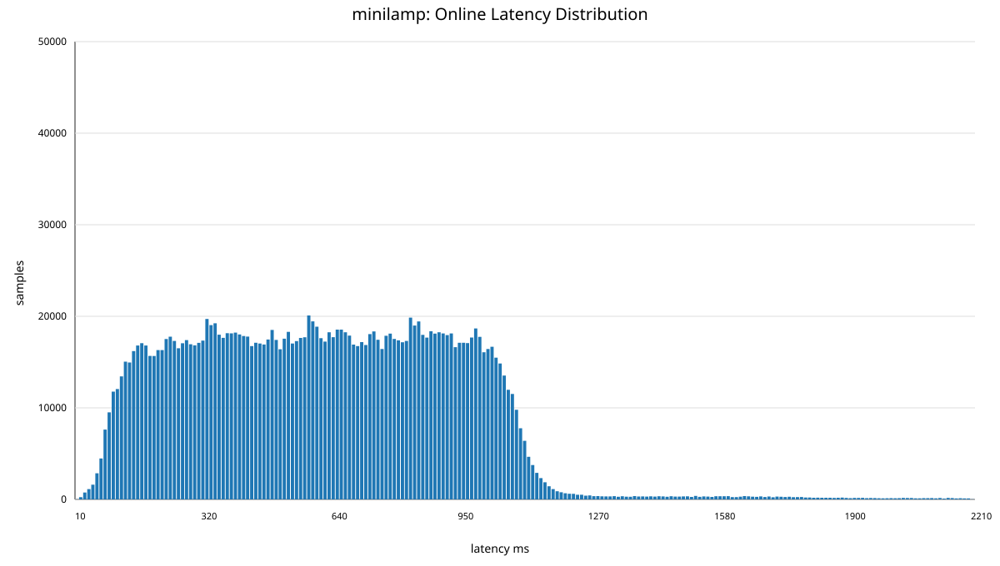
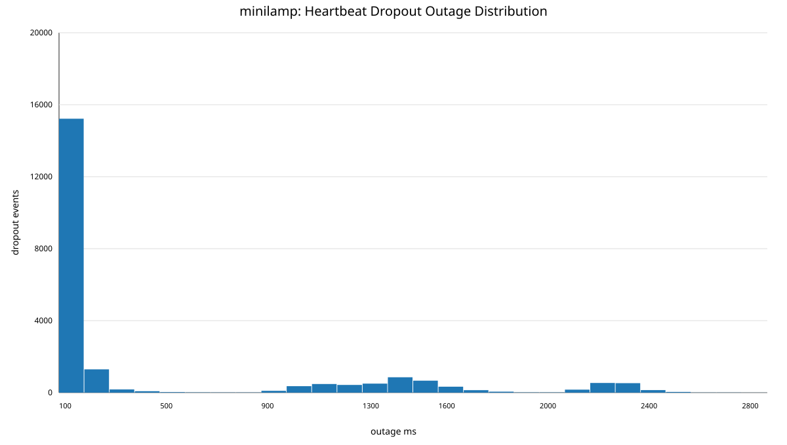
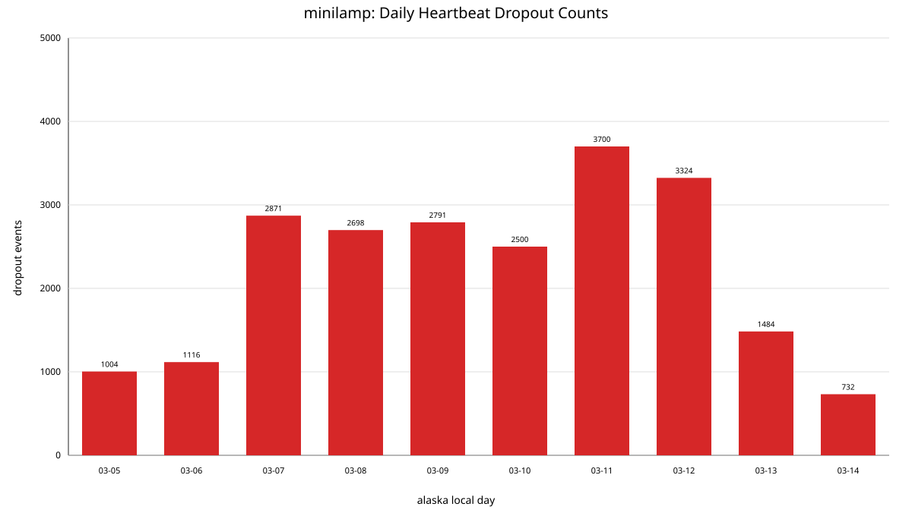

This page preserves historical graph outputs from the original project.
It is included as a static reference only and does not describe required Pebble deployment structure or current analysis tooling.





